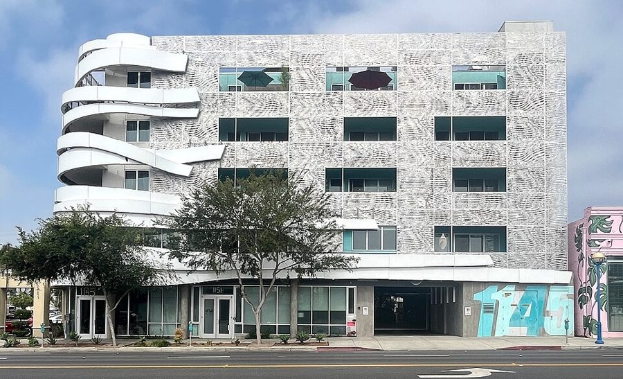
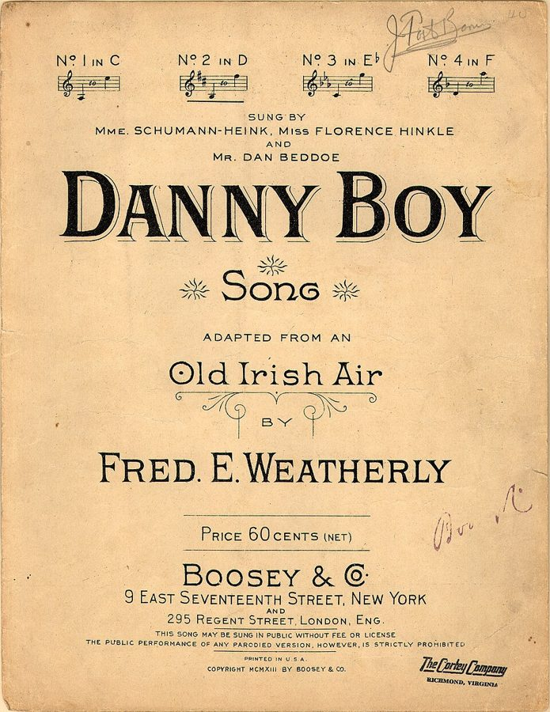
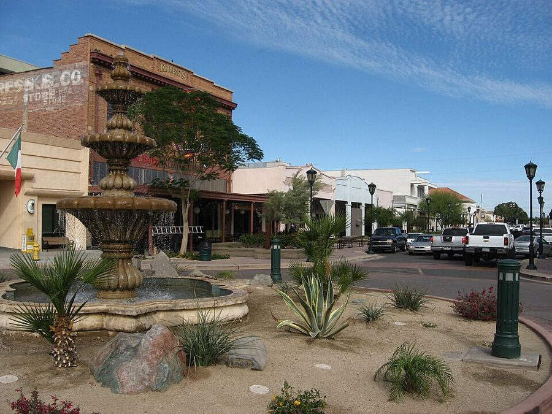
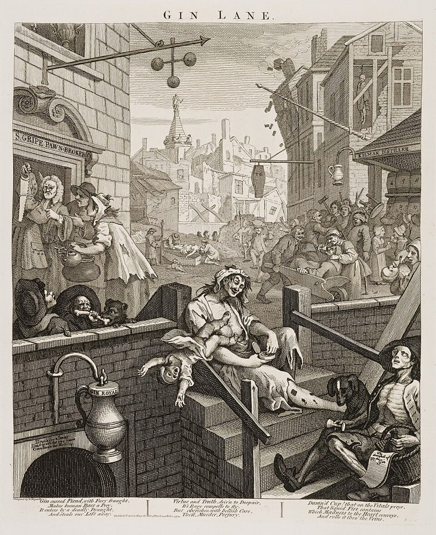
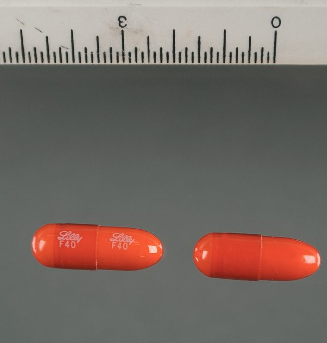

这一章在做什么
一次会面，全书最短的一章。上一章末尾电话那头是 Belle；这一章 Dan 去她的住处见她，然后回家一个人盘算。中间大半是两个人的对话：Dan 只想问出一件事，对方的话东一句西一句，有用的要你自己从里面捡。
难点不在生词，在口语：反话、岔开的话头、说了一半的话、一连串指代不明的 he 和 she。抓两样：Dan 每次是怎么把话题拉回来的；回到家，他手里到底有几条靠得住的线索。

洛杉矶 La Brea 大道上的一栋公寓楼，2023 年。这条街是真的。场景 1 里有一栋楼在它的 lower 一段，没电梯的廉价老楼，和照片里这种新楼正相反。
照片：Benoît Prieur，公有领域（CC0），维基共享资源（与本书无关） 人物
都是虚构的人。只写到上一章结束时你已经知道的。
Dan Davis 叙述者「我」 醒来快半年。证件上六十岁，身体三十岁。在自己当年创办的 Hired Girl 公司挂了个名誉职位，心里排第一的事是找到 Ricky。
Belle Belle Darkin，后来的 Mrs. Gentry，现在自称 Mrs. Schultz Dan 从前的未婚妻。三十年前骗走他的公司，给他打针，改了合同把他送进冷眠。从他醒来那天起就在找他，上一章末尾打通了电话。这一章和 Dan 演对手戏的就是她。
Miles Gentry 只提到，没出场 Dan 从前的合伙人，律师，Ricky 的继父。1970 年和 Belle 结了婚。Dan 醒来后查过，他和 Belle 都早已不在 Hired Girl 公司。
Ricky Frederica Virginia Gentry，只提到，没出场 Miles 的继女，1970 年十一岁。Dan 入睡前把自己的股票转给了她，醒来后却查到银行从没替她托管过什么。她 1971 年从 Mojave 的小学转走，之后没有下落。
Pete 只提到 Dan 的猫。三十年前那一夜从纱门冲出去，没能跟 Dan 一起冷眠。Dan 认定它早已不在了，第 5 章一想到这事就火冒三丈。
Jake Schmidt 只提到，没出场 当年 Hired Girl 车间的主管，管装配线的人。
Chuck Freudenberg 只提到，没出场 Dan 现在的同事和酒友，上一章劝他把新设计先藏起来的那位工程师。
Schultz新 只提到，没出场 Belle 现在这个姓的来历。
the Mannix people 一家财团，只提到 1970 年 Miles 和 Belle 打算把公司卖给它，Dan 就是为这事被踢出去的。第 5 章说过：这个财团后来垮了，Dan 的存款跟着它旗下的保险公司一起没了。
场景地图
这一章原书没有分节，下面是本站按场景划的。粗体是每个场景开头的几个词，照着它在书里找位置；读完一个场景回来打个勾。
I MADE A DATE with …约 350 词 叙述，没有对话。留意他为什么肯见她、对见面方式提了什么条件，进门前后各看出了什么。 I pushed her wrists back. …约 400 词 对话开始，Dan 连着发问。留意每一问得到的是回答、反问还是岔开。桌上有酒，有药。 I took her arm and …约 500 词 话题转到公司和 Flexible Frank。留意 Belle 把账算在谁头上，和 Dan 中途想起的一个细节。 But I was curious on …约 500 词 还是问答，Belle 的情绪几次急转。分清每个 he、she、they 指的是谁；看 Dan 怎么收场。 As soon as I was …约 350 词 回到家，独白。他把听来的话一条条过秤，if 很多。留意他最后给自己定的目标有多高。
背景：作者默认你知道的事
这些都是真实世界里的东西。按在书里出现的顺序排。
场景 1 lower La Brea 和 walk-up flatLa Brea Avenue 是洛杉矶一条南北向的大街，名字是西班牙语的「沥青」，附近有著名的沥青坑化石遗址。lower 大概指它的南段，离好莱坞远的那一头。
walk-up 是没有电梯、要自己走楼梯上去的公寓楼，租金低。flat 是英国人对一套公寓的叫法，美国人多说 apartment。三个词合起来只有一个意思：住得寒酸。
场景 1 两个法语词：ingénue 和 negligeeingénue 是戏剧行话：天真少女这一类角色，也指专演这类角色的年轻女演员。ingénue lead 就是「少女主角」。
negligee （法语 négligé）是女人在卧室里穿的薄晨衣，料子轻，常常半透明，不是见客穿的衣服。
场景 2 Danny boy
《Danny Boy》1913 年的歌谱封面。
Fred. E. Weatherly 词，Boosey & Co. 出版，1913，公有领域，维基共享资源 英语世界人人会哼的一首歌，英国人 Weatherly 填词，配的是一支爱尔兰老调，1913 年出版。歌是唱给一个要远行的 Danny 的。
从此叫 Dan 的人常被人亲昵地叫作 Danny boy。第 1 章 Dan 这样叫过自己，第 4 章 Belle 给他打针时也是这么叫的。这一章这个称呼又出现了。
场景 2 三个沙漠小城：Tucson、Yuma、Indio
太平洋
墨西哥
加利福尼亚州
亚利桑那州
洛杉矶
Mojave
（当年的工厂）
Indio
约 200 公里
Yuma
约 450 公里
Tucson
约 800 公里
本站示意图，位置只是大概。公里数是从洛杉矶开车过去的大致路程。虚线是州界和国界。
这三个地名在场景 2 里一起出现。它们都在洛杉矶东南方向的沙漠里：Indio 在加州，周围种椰枣；Yuma 在加州和亚利桑那州交界的科罗拉多河边，夏天是全美最热的地方之一；Tucson 是亚利桑那州南部的城市。
三个地方彼此隔着几百公里，分属两个州。

Yuma 的老城主街，2010 年。沙漠小城大多是这个样子：天很蓝，楼很矮，街上没什么人。
照片：Ken Lund，CC BY-SA 2.0，维基共享资源（与本书无关） 场景 2 gin 的名声
贺加斯《杜松子酒巷》（Gin Lane ，1751）。
William Hogarth，公有领域，维基共享资源 杜松子酒，便宜的烈酒。18 世纪伦敦穷人喝它喝到成灾，贺加斯这幅画画的就是那时候；英国人管它叫 mother’s ruin （毁掉当妈的东西）。两百年下来，gin 在英语里一直带着「一个人关起门来喝的闷酒」的味道。
straight 是什么都不兑。正经的喝法要兑汤力水或者调成鸡尾酒。
场景 2 morphine and the barbiturates
司可巴比妥（Seconal）胶囊，巴比妥类安眠药里常见的一种。
美国司法部，公有领域，维基共享资源 吗啡是鸦片里提出来的止痛药，会上瘾，买卖受法律管制。巴比妥类（barbiturates）是 1950 年代最常用的安眠药，也上瘾，吃多了会死人。
这两样在当时的读者心里是「危险的药」的代表。说要把某种药 class with 它们，意思是要把它也当毒品管起来。
场景 4 sheriff县治安官，一个县里管执法的头，多数由选民选出来。除了抓人，他手下的人还替法院办事：送传票、查封财产、执行判决。
所以一个普通人说自己被 sheriff 盘问过，可能是刑事上的麻烦，也可能是钱和官司上的麻烦。
场景 5 县（county）和查得到的档案
一座县法院大楼（亚利桑那州 Yuma 县，2010 年）。美国每个县都有这样一栋楼。
照片：Ken Lund，CC BY-SA 2.0，维基共享资源（与本书无关）
美国的州下面分县。出生、死亡、结婚的登记，房产过户，法院的案卷，都由县一级保存，大多数允许任何人去查。
没有全国统一的户籍（上一章 Dan 自己说过），所以找人只能一个县一个县地翻。Dan 说 in this county ，指的是洛杉矶县。
场景 5 skip-tracerskip 是口语里的「跑路」：欠了债、保释在外的人悄悄搬走。skip tracer 就是专门把这种人找出来的人，替债主、保释担保人、律师干活，按件收费。
这是真有的行当，现在还有。它比私家侦探窄，只管一件事：这个人现在住在哪。
场景 5 圣诞卡美国人每年 12 月给亲戚朋友寄圣诞卡，一寄几十张。多年不见面、平时也不通信的人，靠这一年一张卡片保持着「还有联系」。
所以「每年互寄圣诞卡」在英语里是一种关系的刻度：算认识，但也就到此为止。
书里的世界
这一章的「现在」是 Dan 醒来后的第二年 5 月，作者想象出来的未来。下面是这一章新出现的设定；前面见过的只提一句。
1970 年 12 月
现在
Dan
冷眠，身体不变老
30 岁
身体 30，证件 60
Belle
自称 23 岁
按自称算 53 岁
Ricky
11 岁
41 岁
三十年照常过
三十年照常过
本站示意图。三十年的账，数字都是前面各章给过的：第 1 章 Belle 自称二十三岁（Dan 当时就不大信），第 5 章 Dan 算过 Ricky 该四十一了。这一章开头有一句年龄的算术，用的就是中间这一行。
书里的说法 在书里是什么 真实世界里 euphorion 一种装在条纹胶囊里的药。据说无毒、不上瘾，但说法不一，有人主张把它和吗啡、巴比妥归为一类。药效书里没明说，名字来自 euphoria（欣快）。 没有这种药。1955 年美国上市的安定药 Miltown（meprobamate）当时也以「不上瘾」出名，风行一时，后来被列为管制药品。这本书写于 1956 年。 geriatrics 加 endocrinology 老年医学加内分泌学。女人只要肯花工夫，三十岁的样子可以多保持至少三十年，很多人这么做。 做不到。 grabbie stars grabbie 是第 5 章说过的 2000 年的电影。这里说有的女明星当了祖母还在演少女。 — Sticktite 第 5、6 章见过的自粘面料。这一章里是一件晨衣。 见第 5 章。 New Plan 第 6 章见过：城市里按新规划改造过的片区。没改造的地方房子旧，租金低。 — frallup 一句骂人的话，当名词用。书里没解释。 作者造的词。 shiker 也是骂人的话，书里没解释。 美国俚语里有个来自意第绪语的 shicker / shikker，意思是醉鬼。作者用的是不是它，书里没交代。 kink（动词） 第 6 章 Dan 说过，kink 在这三十年里变成了不能当着女士说的词，意思没讲。这一章有人把它当动词用。 现实里 kink 的本义是「（绳子、水管的）扭结」，引申为怪癖。书里的新义是作者设计的。 Hired Girl Appliances and Geary Manufacturing, Inc. Hired Girl 公司现在的全名。上一章 Chuck 说过：现在的公司原是一家租用 Hired Girl 专利的制造厂，约二十年前两家合并。这一章给出了那家厂的名字。 —
顺便回忆一件旧设定，这一章要用：Flexible Frank 是 Dan 在 1970 年造的万能家务机器人的样机，装在一台电动轮椅的底盘上，四百磅重，只有那一台。
Dan 被踢出公司的第二天清早去搬它，它已经不在原处；他的笔记和图纸也没有还给他。醒来以后，他在医院里见到了它的「曾孙」Eager Beaver，是 Aladdin 公司的产品。
词与短语
词条按在书里出现的顺序排，按场景分组。斜体小字是它所在的那句话里的几个词，方便你在书里找到。
场景 1 I MADE A DATE with …
make a date
I MADE A DATE with her. …
约个时间见面
date 是「约定的会面」，不一定是谈恋爱的约会。这里 Dan 特意挑了个最不带感情的说法。
switch off
… to hell and switch off. I …
挂断（电话）
2000 年的电话是带开关和屏幕的机器，所以是「关掉」，不是 hang up。
fitting
… back and fitting revenge would simply …
相称的，够分量的
形容词。第 1 章他在酒吧里想的就是 the fitting revenge。
land someone in jail
… would simply land me in jail. …
让某人落得坐牢
land 作动词：使……落到（某种坏处境）。
not fussy about fine points
… not fussy about fine points of etiquette. …
不讲究细枝末节
fussy 是挑剔；fine points 是细微之处，fine 在这里是「细」不是「好」。etiquette：礼节。
walk-up flat
… cheap rental, a walk-up flat in …
没电梯的公寓
见上面「背景」。rental 是出租房。
bilk someone out of
… she had bilked me out of, …
从某人手里骗走
前半句的 hang onto 是「保住、没弄丢」。
care to take the trouble
… who cared to take the trouble …
肯费这个事
care to do = 愿意做，不是「关心」。下一段还会再用一次。
ingénue leads
… while still playing ingénue leads. …
少女主角
见上面「背景」。lead 是主角。
kittenish
… and shrill and kittenish. It was …
像小猫一样撒娇卖俏的
说年轻姑娘是俏皮，说别人就是贬义。shrill：嗓音尖。前面几章 Dan 用猫打比方多半是夸，这一处不是。
principal asset
… her body her principal asset, for …
最大的本钱
asset 是账本上的「资产」。Dan 用记账的词说人。
mammalian
… was female, mammalian, overfed, and underexercised. …
哺乳动物的
四个词像在填动物标本的卡片：雌性、哺乳类、喂得太多、运动不足。mammal 的词根是「乳房」，这是 Dan 的损法。
conceit
… left was her conceit and her …
自负，自以为了不起
不是 concept。前一句的 fuzzy 是「糊涂、不清楚」，和 keen（锐利）相对。
unwind her
… me before I could unwind her. …
把缠上来的她解开
unwind 本义是把绕着的线、绳松开。工程师的说法。
场景 2 I pushed her wrists back. …
I’ll bet
… “I’ll bet.” I had gone there …
（反话）那还用说
字面是「我敢打赌是这样」。冷冷地说出来，意思是「我才不信」。
keep my temper
… resolved to keep my temper...just …
忍住不发火
temper 是脾气的「控制」。keep one’s temper 是不发火，lose one’s temper 才是发火。resolved to：下了决心。
drugged to my eyebrows
… last? Drugged to my eyebrows so …
被药灌到了顶
up to the eyebrows / eyeballs：满到眉毛，夸张说「彻底地」。
for your own good
… did it for your own good! …
为了你好
第 3 章 Miles 对 Dan 说过同一句，Dan 当时回的是绞死偷马贼的笑话。
Did he fall or was he pushed?
… Did he fall or was he pushed? …
是自己摔的，还是被人推的？
英语里的一句老话。听说谁出了事、丢了位子，就半开玩笑地问这一句：是意外，还是有人下的手。
arsenic
… was he pushed? Arsenic soup? I …
砒霜
老派侦探小说里下毒的头号选择，通常下在吃的喝的里。
stick to the main issue
… decided to stick to the main issue …
咬住正题不放
stick to：不偏离。issue 是「要谈的问题」。
jump the track
… before she jumped the track completely. …
（火车）脱轨；话头彻底跑偏
Dan 的机器比方：对方的脑子是一列随时会出轨的车。
What became of …?
… completely. “What became of Ricky?” …
……后来怎么样了？
become of 只用在问句里，问人或东西的下落。
brat
… that horrible little brat! How should …
讨人嫌的小鬼
How should I know? 是「我怎么会知道」，不耐烦的口气。
that impossible child
… talk about that impossible child— I …
那个叫人受不了的孩子
impossible 说人：难缠、没法相处。
Danny boy
… “Danny boy, you’re being very …
对 Dan 的亲昵叫法
见上面「背景」。
tiresome
… you’re being very tiresome. Why in …
烦人
不是「累」。you’re being … 用进行时，说的是「你此刻的表现」。Why in the world：到底为什么。
Don’t be dull
… been Hinckley. Don’t be dull, dear. …
别这么没劲
dull 是乏味，不是「钝」。这个场景里它出现三次：先说地方，再说人，再感叹一句。
drink a toast to
… Let’s drink a toast to our …
为……干一杯
toast 是祝酒，和烤面包是同一个词。reunion：重逢。
I don’t use the stuff
… “I don’t use the stuff.” This …
我不沾那东西
the stuff 指酒。use 用在烟、酒、毒品上是「沾、碰」。
straight gin
… pouring it—straight gin, the lonely girl’s …
什么都不兑的杜松子酒
见上面「背景」。后半句套的是「某某是姑娘最好的朋友」这类老话。
agitation to class it with
… There was agitation to class it …
有人在鼓动把它和……归为一类
agitation 这里是「公开呼吁、造声势」，不是「焦躁不安」。class 当动词：归类。
Thanks. I’m happy now.
… barbiturates. “Thanks. I’m happy now.” …
谢了，我现在就挺高兴
婉拒，等于 No, thanks。又是顺着药名说的：那药叫「欣快」，我不用药也 happy。
chase them with gin
… of them, chased them with gin. …
拿酒把药送下去
chaser 是喝完烈酒紧跟着喝的那一口淡的。这里倒过来，拿烈酒去「追」药。
场景 3 I took her arm and …
bring me up to date
… yourself. Bring me up to date. …
把后来的事都讲给我听
up to date：跟上最新情况。这一章第二个 date，意思是「日期」。
make out with
… and Miles make out with the …
和……谈得怎么样
make out = 进展如何、结果怎样，1950 年代的常用义。今天 make out with 多指「亲热」，别读岔。
flare up
… She suddenly flared up. “That was …
一下子火了
flare 是火苗猛地一蹿。
frozen stiff
… I was frozen stiff, in cold …
冻得硬邦邦
平时是夸张，说天冷。Dan 这里用的是字面意思。
swipe
… must have swiped Flexible Frank, if …
顺走，偷
口语。第 2 章 Dan 说自己 swiped 了电动乌龟的路线算法，是同一个词。今天它多指刷卡、划屏。
No, we didn’t either
… “No, we didn’t either. Miles, the …
才没有呢
口语里 did not either 用来顶回对方的话（你说有，我偏说没有），不是「也没有」。
fuss about
… I did not fuss about the word …
在……上纠缠、计较
Dan 忍住没去抠对方用的一个词。那个词为什么刺耳，想想东西原本是谁的。
stuffed like a goose
… already stuffed like a goose—when I …
塞得满满当当
烤鹅肚子里要填馅。这一段前后三个 stuff，都是「塞」。
fall through
… the Mannix deal fell through what …
（交易、计划）告吹
不是「掉下去穿过」。
quit us
… when Jake quit us Miles said …
辞了我们的工
quit 可以直接跟人或公司。下一句 why you had quit 的 quit 是同一个意思。
license to
… then we licensed to Geary Manufacturing, …
把（专利）授权给……去生产
专利还是自己的，让别人造，自己收使用费。第 2 章 Dan 在股东会上提的正是这个办法。
wreck
… this flabby old wreck could tell …
垮掉的人
本义是沉船、撞毁的车的残骸。flabby：肉松垮垮的。
场景 4 But I was curious on …
put that notion in your head
… Whatever put that silly notion in …
让你生出这种念头
whatever 是加强语气的 what：「到底是什么……」。
kink someone out of
… kinked me out of it.” She …
把某人的……坑走
句型和 cheat someone out of 一样。kink 见上面「书里的世界」。
the worst of the lot
… were the worst of the lot, …
这一帮里最坏的
lot 是「一批、一伙」。
leave it all to
… He left it all to that …
把所有的都留给
leave … to … 是遗嘱用语。
one good break
… had received one good break, even …
走了一回好运
break 是运气、转机。第 1 章 give the customer a break 是同一个 break。
set her off
… important.” That set her off. She …
把她点着了
set off 本来说引爆炸药、触发警报。
brace up
… a little. “Brace up, Belle. I …
振作点，稳住
brace 是支架、撑住。
address letters
… did Miles address letters when he …
在信封上写收信人地址
address 当动词。Dan 换了个问法：不问「住哪」，问「信怎么写」。
see about the will
… they came to see about the will.” …
来办遗嘱的事
see about：过问、处理。will 是遗嘱。同一句里的 sober 是「一下子清醒、正经起来」。
old goat
… saw—and that old goat had seen …
老色鬼
goat 说人，是好色的老头。had seen plenty：见得多了。
had had all I could stand
… had had all I could stand, …
已经忍到头了
第一个 had 是过去完成时的助动词，第二个是「受了」。stand：忍受。play detective：扮侦探。
break my engagements
… but I’ll break my engagements and—” …
把约好的事都推掉
engagement 这里是「事先定下的约会、安排」，不是订婚。不过在这两个人之间，这个词听着扎耳朵。
场景 5 As soon as I was …
maunderings
… if Belle’s maunderings meant anything at …
颠三倒四的絮叨
后面的 a matter highly doubtful 是插入语：「这一点大可怀疑」。
skip-tracers could make something of
… professional skip-tracers could make something of …
专门找人的行家能从中理出点头绪
skip-tracer 见上面「背景」。make something of：从……里看出名堂。
signify
… know anything else that signified? …
算数，有分量
不及物用法：有意义、要紧。
the hearing on his will
… down the hearing on his will...if …
关于他遗嘱的那次开庭
hearing 是法庭的听审，不是「听力」。track down：追查到。
anything but
… would be anything but gracious and …
绝不是……
这里套在 Not that I feared 里面，三层否定：我倒不是怕她会「不」和气善良。意思是肯定的。
it couldn’t hurt to try
… well, it couldn’t hurt to try …
试试总没坏处
could not very well object
… could not very well object to …
总不好反对
can’t very well do：按情理不便做。very well 不是「很好」。
值得停下来的句子
And when I saw her I realized that revenge was much too late; she and the years had managed it for me.
— 场景 1。本站译：一见到她我就明白，报仇早就来不及了：她自己和这些年，已经替我办妥了。
第 1 章 Dan 在酒吧里定下「三十年」，图的就是她老了而自己还年轻，好当面叫她难堪。这一句是那笔账的结清。
managed it 的 it 指 revenge；主语是 she and the years ，两个并列：岁月出了一半力，她自己出了另一半（下面紧跟一句 Belle had not taken the trouble）。
too late 用得反常：通常说报仇「太晚」是没赶上，这里是已经有人先做完了。Dan 没有高兴，这一章此后也没有一句得意的话。
I wondered how he had died. Did he fall or was he pushed? Arsenic soup?
— 场景 2，Dan 心里的话。本站译：我琢磨他是怎么死的。自己摔的，还是被人推的？砒霜汤？
Belle 刚说完 Miles 在 Dan「离开」后不到两年就死了，紧接着骂了一句他骗了她。Dan 的反应是这三个越来越短的问句。
第二句是现成的老话，第三句只剩两个词。他怀疑的是谁，一个字没提，也没有问出口：下一句他就决定只问正事。
这三个问号书里到这一章结束都没有回答。
Wasn’t I, in my own way, living in a fantasy of the past quite as much as Belle was?
— 场景 5。本站译：我自己不也一样吗，换了个样子，照旧活在对过去的幻想里，一点不比 Belle 少？
否定的反问句，意思是肯定的：我也是。quite as much as 是「程度完全不亚于」。
Belle 说自己三十九岁，要和 Dan「重新开始」，她停在 1970 年。Dan 满脑子是一个十一岁的小姑娘，而那个人今年四十一了。
场景 5 前半段是侦探式的推理（查县里的档案、找开庭记录），到这一句转成了自省，下一段的目标就降到了「每年互寄圣诞卡」。
检查一下理解
先在心里答，再点开。答错的那题，回书里把对应的场景再读一遍。
1.（场景 1）Dan 说报仇很幼稚，那他为什么还要见 Belle？又为什么不肯请她吃饭？
只为一件事：Belle 多半知道 Ricky 的下落。不吃饭不是小气，是原则：他说饭只和朋友一起吃，所以只约上门，不吃不喝。后面她劝酒，他也没碰。
2.（场景 1）「不小于五十三岁」是怎么算出来的？Dan 自己信这个数吗？
1970 年她自称二十三，加三十年。Dan 不信，估计她实际接近六十。接着他说这年头的女人只要肯花工夫可以一直像三十岁，而 Belle 没花这个工夫，所以她看上去就是实际的岁数。
3.（场景 2）Belle 骂 The frallup cheated me!，骂的是谁？这时候 Dan 知道是怎么个骗法吗？
骂的是 Miles，她刚说完他在 Dan 入睡后不到两年就死了。怎么骗的此刻没说，Dan 也没追问，他急着问 Ricky。答案要到场景 4 才出来：Miles 的遗产没有留给她。
4.（场景 2）Dan 说「我不沾酒」，又加一句 almost true。到底沾不沾？他为什么不要那粒药？
基本戒了：他发现酒在紧要关头靠不住，现在只和 Chuck 喝杯啤酒。药他认得，是有争议的 euphorion，所以一句俏皮话推掉。他还看出时间不多了：药加酒下去，她很快就只会傻笑。
5.（场景 3）和 Mannix 的那笔交易为什么没成？Belle 认定是谁干的，Dan 为什么说不可能？
Mannix 要的是 Flexible Frank，而它从 Miles 的车库里不见了，笔记和图纸被 Miles 塞在它里面（Dan 推想是底座上那块搁板），一起丢了。Belle 认定是 Dan 拿的，因为别人不知道它值钱。Dan 那时正冻在冷眠库里，所以他确信另有其人，但不知道是谁。
6.（场景 3）交易黄了以后公司是怎么一步步变成现在这样的？Belle 和 Miles 的主意一样吗？
两人先自己经营；Jake 辞职后，Miles 坚持停产，把专利授权给 Geary Manufacturing 去造。Belle 当时想另雇一个主管接着干，没拗过 Miles。授权这条路，正是当年 Dan 在股东会上主张、Miles 当场反对的那一条。
7.（场景 4）He left it all to that dirty brat of his 里，he 和 brat 各是谁？Dan 为什么说这是今晚第一个好消息？
Miles 把遗产全留给了继女 Ricky，Belle 一分没得到，所以她说被骗了。对 Dan 来说，这说明 Ricky 至少得了一样好处，哪怕他寄给她的那份股票早先被人弄走了。
8.（场景 4）Belle 说「女人三十九岁不算老」，又说可以为 Dan break my engagements。这两句各该怎么理解？
三十九是她现在给自己报的岁数，比她三十年前自称的二十三只多了十六岁。engagements 是「约好的应酬」，不是订婚，她在摆出很抢手的样子。Dan 的回答是以后不会再见，他也确实再没见过她。
9.（场景 5）回到家，关于 Ricky 的下落 Dan 到底问出了什么？他打算怎么用？
三样，都不牢靠：grandmother 的姓大概是 H 开头（书里没说是祖母还是外祖母）；她们住在亚利桑那或加州的某个沙漠小城；Miles 大约死于 1972 年。可行的一条路是在本县查 Miles 的死亡日期，再找遗嘱的开庭记录，看上面有没有 Ricky 当时的住址。就算查到，也是二十八年前的地址。
留给后面的问题
这些是这一章自己提出来、但没有回答的。带着它们往下读。
Flexible Frank 和塞在它里面的图纸，当年是谁弄走的？
Miles 是怎么死的？Dan 心里问了三句，书里一句没答。
四十一岁的 Ricky 在哪里？她还记得那个被她叫作 Uncle Danny 的人吗？